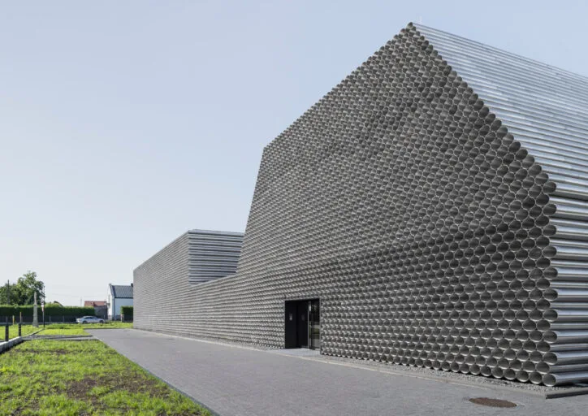
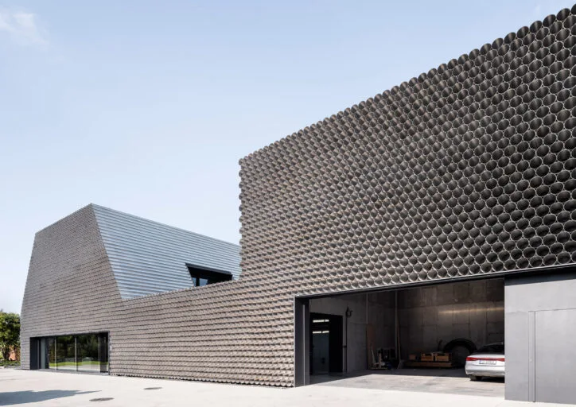
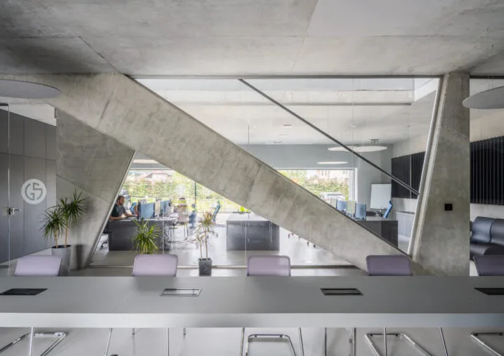
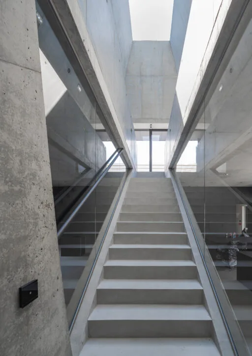
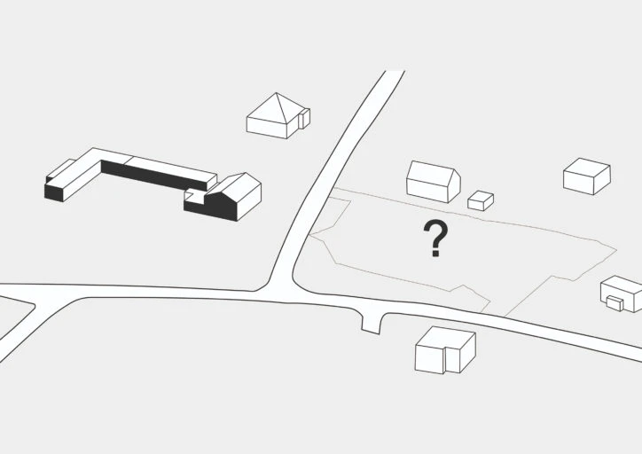
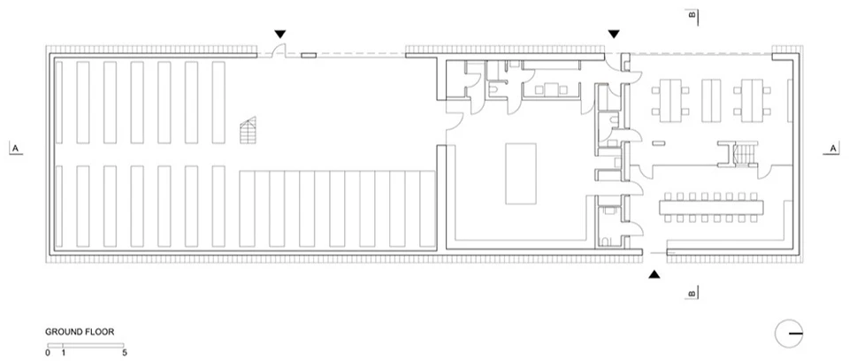
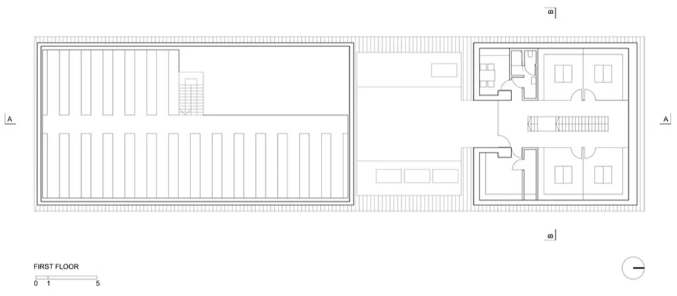
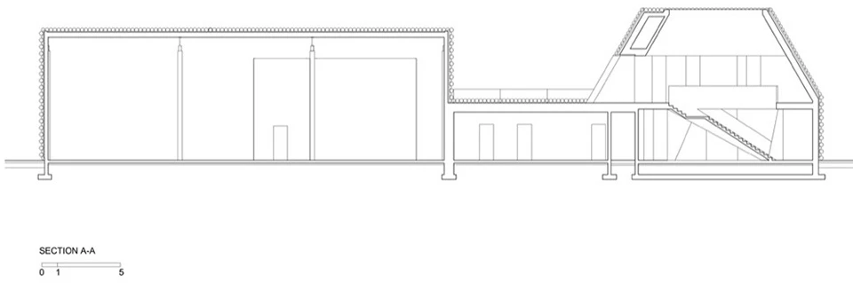

Office and warehouse · 2024
Gambit Office
Robert Konieczny / KWK Promes; Robert Konieczny and Michał Lisiński
The headquarters combines office work with storage and distribution. Its relevance to THINK is the accommodation of administrative work within a building that also has a larger logistical programme.
The architects used inexpensive raw aluminium sheets to evoke stacked pipes, connecting the building's appearance to the company's trade. Its continuous street frontage breaks into smaller volumes towards neighbouring houses, reconciling the office and warehouse with a more domestic context.


Relevant connections
THINK
Office spaces accommodate the administrative and planning work of a distribution company.
Images and drawings / 08













